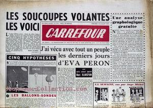

Carrefour n° 411 du 30, titrant sur 5 hypothèses d'identification des soucoupes volantes.
Parmi celles-ci, les ballons-sondes.

A San Antonio (Texas), E. E. Nye et une autre personne observent pendant un objet rond et
blanc voler lentement puis partir très rapidement Cas Blue Book n° 1758 non expliqué.
A Albuquerque (Nouveau Mexique), le 1er
lieutenant de l'USAF George Funk observe un lumière orange rester stationnaire durant
Cas Blue
Book n° 1755 non expliqué.
Près de Vico (Italie), Carlo Rossi pêche là où il a vu un
disque volant , lorsqu'il est approché par un grand homme mince qui l'interroge sur les
soucoupes volantes, lui offre une a cigarette à bout doré. Quand elle le rend malade il la jette dans l'eau,
et s'en va. Craignant que quelqu'un essaie de le réduire au silence, Rossi se rend au bureau du Procureur Public
de la ville de Lucca et fait une déposition sous serment de sa rencontre avec un ovniRandles, J.: MIB, pp. 143-44Vallée, J.:Keel, J. A.: The Cosmic Question, p. 151 < Medway, Gareth J.: "Men
in Black Encounters, a Short Catalogue", Magonia.
En Allemagne de l'Ouest, Roland Hughes (Flight Sergeant,
RAF) rentre d'un vol d'entraînement dans un Vampire FB9, quand il voit un disque
métallique argenté luisant voler à côté de lui avant de partir en vitesse. L'ovni est aussi repéré sur les
radars au sol "The
UFO sighting that convinced a Government minister", The Telegraph, 27 mai 2012.